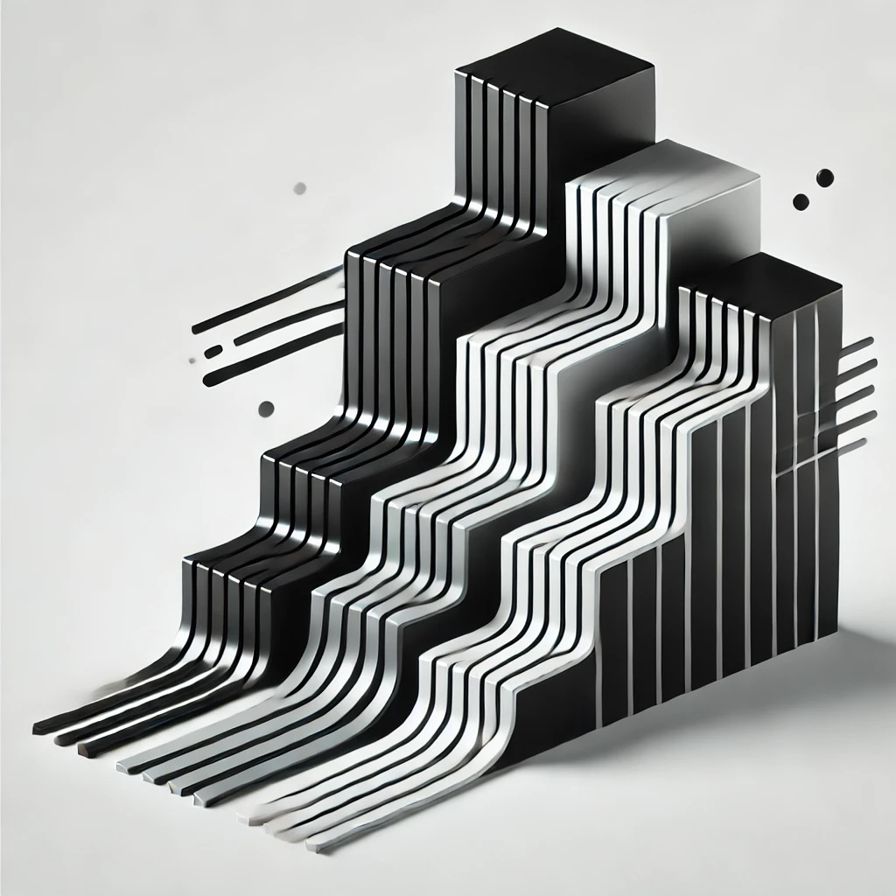

Custom Vector Implementation
Project Overview
A production-ready, memory-efficient vector implementation in Rust with type-size aware growth strategies and comprehensive safety guarantees. The implementation achieves significant performance improvements over the standard library for small vector operations while maintaining robust memory safety.
Key Features
Core Functionality
- Generic type support with proper memory management
- Type-size aware growth strategies (100% for small types, 50% for medium, 25% for large)
- Comprehensive iterator support (forward, backward, mutable, consuming)
- Standard vector operations (push, pop, insert, remove)
- Zero-sized type optimizations
Memory Management
- Automatic capacity management based on type size
- Efficient reallocation strategies
- Memory waste control
- Platform-specific capacity limits
- Memory leak prevention
Iterator Support
- Forward and backward iteration
- Mutable and immutable iterators
- Consuming iterator implementation
- Double-ended iterator support
- Drain iterator for efficient removal
Technical Implementation
Type-Size Aware Memory Management
pub struct RawVec {
ptr: *mut T, // Raw pointer to heap memory
cap: usize, // Total allocated capacity
}
impl RawVec {
pub fn with_capacity(capacity: usize) -> Self {
// Handle zero-sized types
if std::mem::size_of::() == 0 {
return RawVec {
ptr: std::ptr::NonNull::dangling().as_ptr(),
cap: usize::MAX,
};
}
let layout = Layout::array::(capacity)
.expect("Failed to create layout");
let ptr = unsafe {
alloc::alloc(layout) as *mut T
};
if ptr.is_null() {
alloc::handle_alloc_error(layout);
}
RawVec { ptr, cap: capacity }
}
} Iterator Implementation
pub struct IntoIter {
buf: RawVec,
start: usize,
end: usize,
}
impl Iterator for IntoIter {
type Item = T;
fn next(&mut self) -> Option {
if self.start == self.end {
None
} else {
let result = self.buf.read_at(self.start);
self.start += 1;
Some(result)
}
}
}
impl DoubleEndedIterator for IntoIter {
fn next_back(&mut self) -> Option {
if self.start == self.end {
None
} else {
self.end -= 1;
Some(self.buf.read_at(self.end))
}
}
} Memory Safety
impl Drop for RawVec {
fn drop(&mut self) {
if self.cap != 0 && std::mem::size_of::() != 0 {
unsafe {
let layout = Layout::array::(self.cap)
.expect("Failed to create layout");
alloc::dealloc(
self.ptr as *mut u8,
layout
);
}
}
}
} Performance Characteristics
Operation Timings
- Insert Start: ~290ns
- Remove Start: ~145ns
- Insert Middle: ~255ns
- Remove Middle: ~73ns
- Insert End: ~221ns
- Remove End: ~3ns
- Extend: ~231ns
- Iterate: ~269ns
Safety Guarantees
- Bounds checking on all operations
- Proper handling of zero-sized types
- Memory leak prevention
- Thread-safe ownership model
- Panic-safe drop implementation
- Protected against integer overflow